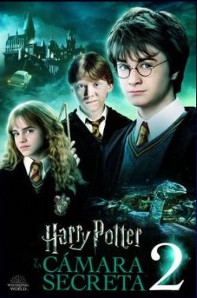
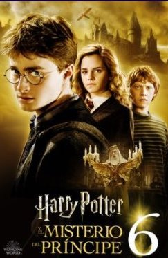

Harry Potter y la piedra filosofal - (2001)
Director: Chris Columbus
Sinopsis: Esta película sigue las aventuras del joven Harry Potter, quien descubre que es un mago y es aceptado en la escuela de magia y hechicería de Hogwarts. Allí, junto con sus amigos Ron y Hermione, Harry investiga la misteriosa piedra filosofal mientras se enfrenta al malvado mago Voldemort.
Curiosidades: La película marcó el comienzo de la exitosa franquicia cinematográfica de Harry Potter y fue aclamada por la fidelidad a la novela original de J.K. Rowling.
Harry Potter y la cámara secreta - (2002)
Director: Chris Columbus
Sinopsis: En su segundo año en Hogwarts, Harry se enfrenta a un misterioso atacante que ha abierto la Cámara de los Secretos, liberando una peligrosa criatura que pone en peligro a los estudiantes muggle nacidos. Junto con Ron y Hermione, Harry investiga para descubrir la verdad detrás de la leyenda.
Curiosidades: Esta película introduce elementos clave de la trama, como el diario de Tom Riddle y la leyenda de la Cámara de los Secretos.
Harry Potter y el prisionero de Azkaban - (2004)
Director: Alfonso Cuarón
Sinopsis: En su tercer año en Hogwarts, Harry descubre que el prisionero Sirius Black ha escapado de Azkaban y está buscándolo. La película explora el pasado oscuro de los padres de Harry y presenta nuevos elementos en la trama, como los dementores y el Mapa del Merodeador.
Curiosidades: Alfonso Cuarón aportó un estilo visual único a la película, diferenciándola de las anteriores entregas.
Harry Potter y el cáliz de fuego - (2005)
Director: Mike Newell
Sinopsis: En su cuarto año en Hogwarts, Harry es seleccionado para competir en el Torneo de los Tres Magos, un peligroso desafío entre las tres principales escuelas de magia de Europa. La película marca un punto de inflexión en la saga, con un tono más oscuro y maduro.
Curiosidades: La inclusión de la trama del Torneo de los Tres Magos agregó una dimensión emocionante a la historia, con desafíos mortales y traiciones inesperadas.
Harry Potter y la orden del Fénix - (2007)
Director: David Yates
Sinopsis: En su quinto año en Hogwarts, Harry lidera un grupo de estudiantes en la resistencia contra el régimen opresivo del nuevo profesor de Defensa Contra las Artes Oscuras, Dolores Umbridge. La película profundiza en la creciente amenaza de Voldemort y la formación de la Orden del Fénix.
Curiosidades: Esta película marca el inicio de la colaboración de David Yates como director principal de las películas restantes de la saga.
Harry Potter y el misterio del príncipe - (2009)
Director: David Yates
Sinopsis: En su sexto año en Hogwarts, Harry explora el pasado de Voldemort con la ayuda de un misterioso libro de hechizos perteneciente al "príncipe mestizo". La película profundiza en las relaciones entre los personajes principales y establece las bases para el enfrentamiento final.
Curiosidades: La película presenta importantes revelaciones sobre el pasado de Voldemort y su conexión con Harry.
Harry Potter y las relíquias de la muerte - Parte 1 - (2010)
Director: David Yates
Sinopsis: La primera parte de la adaptación cinematográfica del último libro sigue a Harry, Ron y Hermione mientras buscan y destruyen los Horrocruxes, objetos que contienen fragmentos del alma de Voldemort. La película muestra su peligroso viaje y su lucha contra las fuerzas oscuras.
Curiosidades: Esta película presenta un tono más sombrío y una atmósfera de tensión mientras los protagonistas enfrentan desafíos cada vez más peligrosos.
Harry Potter y las relíquias de la muerte - Parte 2 - (2011)
Director: David Yates
Sinopsis: La segunda parte concluye la saga con la épica batalla final entre las fuerzas del bien y del mal en Hogwarts. Harry se enfrenta a Voldemort en un enfrentamiento decisivo que determinará el destino del mundo mágico.
Curiosidades: Esta película ofrece un emocionante clímax para la serie, con momentos de acción intensa y conclusión satisfactoria para los personajes principales.